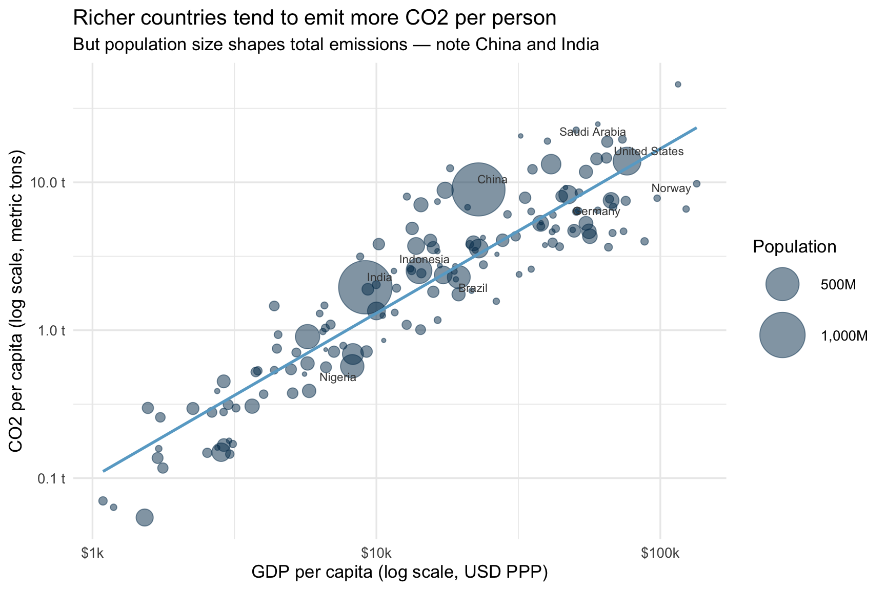

Code
co2_data <- read_csv(here("content/material/session01/data/wdi_co2_gdp_pop.csv"))A short analytical report
Prof. Dr. Claudius Gräbner-Radkowitsch
10 03 2026
Do richer countries pollute more? At first glance, the answer seems obvious: higher incomes mean more factories, more cars, more flights. But the reality is more nuanced. Some of the world’s largest emitters are middle-income countries with enormous populations, while several wealthy nations have managed to decouple economic growth from emissions growth.
In this report, we explore the cross-country relationship between economic output and CO2 emissions using recent data from the World Bank. The central question is: how closely does a country’s income level predict its CO2 footprint — and does population size explain the pattern?
Understanding this relationship matters for international business: companies operating across borders face very different regulatory environments and carbon cost structures depending on where a country sits in the income-emissions space.
We use panel data covering the period 2020–2024 for all countries for which complete data are available. The three key variables are:
The data were downloaded from the World Bank World Development Indicators using the WDI R package (Arel-Bundock 2024) and are stored locally in data/wdi_co2_gdp_pop.csv. To reproduce the download, run fetch_data.R in this session’s folder.
For the main visualisation, we average each variable across all available years per country. This smooths out year-to-year fluctuations and gives a more stable cross-country picture.
# Highlight a selection of named countries for orientation
label_countries <- c(
"United States", "China", "India", "Germany",
"Brazil", "Nigeria", "Norway", "Saudi Arabia", "Indonesia"
)
ggplot(
co2_avg,
aes(x = gdp_pc_ppp, y = co2_pc_t, size = pop, label = country)
) +
geom_point(alpha = 0.5, colour = "#00395B") +
geom_smooth(method = "lm", se = FALSE, color = "#69aacd", show.legend = FALSE) +
geom_text_repel(
data = co2_avg |> filter(country %in% label_countries),
size = 3, colour = "#444444", max.overlaps = Inf,
show.legend = FALSE
) +
scale_x_log10(labels = scales::label_dollar(scale = 1/1000, suffix = "k")) +
scale_y_log10(labels = scales::label_comma(suffix = " t")) +
scale_size_continuous(
range = c(1, 18),
labels = scales::label_comma(scale = 1/1e6, suffix = "M")
) +
labs(
x = "GDP per capita (log scale, USD PPP)",
y = "CO2 per capita (log scale, metric tons)",
size = "Population",
title = "Richer countries tend to emit more CO2 per person",
subtitle = "But population size shapes total emissions — note China and India"
)
Figure 1 reveals a clear positive association: countries with higher GDP per capita also tend to have higher CO2 emissions per person. Both axes use a log scale — this is important when variables span several orders of magnitude, as both income and emissions do. On a log scale, equal distances represent equal percentage differences, which makes cross-country comparisons more meaningful.
Notice that the relationship is not perfectly tight. Some high-income countries (e.g. Norway) emit substantially less than their income level would predict — reflecting a combination of renewable energy, mild climate, and policy choices. Conversely, some oil-producing economies emit far more than their income alone would suggest.
The bubble size encodes population, which drives a wedge between per-capita and total emissions. China and India, for example, sit at moderate income and emissions per capita, but their enormous populations make them among the world’s largest total emitters.
# Both variables already transformed in the data; log-transform here for the model
co2_model <- co2_avg |>
mutate(
log_co2_pc = log(co2_pc_t),
log_gdp_pc = log(gdp_pc_ppp)
)
model <- lm(log_co2_pc ~ log_gdp_pc, data = co2_model)
modelsummary(
model,
stars = TRUE,
gof_map = c("nobs", "r.squared"),
coef_rename = c(
"(Intercept)" = "Intercept",
"log_gdp_pc" = "Log GDP per capita"
)
)| (1) | |
|---|---|
| + p < 0.1, * p < 0.05, ** p < 0.01, *** p < 0.001 | |
| Intercept | -9.972*** |
| (0.404) | |
| Log GDP per capita | 1.112*** |
| (0.042) | |
| Num.Obs. | 149 |
| R2 | 0.828 |
When both variables are log-transformed, the coefficient has a convenient interpretation: a 1% increase in GDP per capita is associated with on average a 1.11% change in CO2 per capita, on average. This is an elasticity — a concept we return to in Session 2.
A simple cross-country regression confirms a strong positive relationship between income and CO2 emissions per capita. Yet income explains only part of the story: the residual variation reflects differences in energy mix, industrial structure, climate policy, and geography. Unpacking these patterns — and distinguishing correlation from causation — requires the tools we develop across the rest of this course.
---
# ── Document metadata ──────────────────────────────────────────────────────────
title: "CO2 Emissions and Economic Development: A Global Perspective"
subtitle: "A short analytical report"
author: "Prof. Dr. Claudius Gräbner-Radkowitsch" # change to your name
date: today # renders as the current date automatically — no need to update
# ── Output formats ─────────────────────────────────────────────────────────────
format:
html:
toc: true # table of contents on the side
toc-depth: 3 # include headings up to level 3 (###)
number-sections: true # numbered headings: 1, 1.1, 1.2, 2, ...
code-fold: true # code chunks collapsed by default; reader can expand
code-tools: true # Allows users to download source file
docx:
toc: true
number-sections: true
execute:
warning: false # Do not show warnings
message: false # Do not show messages
# ── Bibliography ───────────────────────────────────────────────────────────────
bibliography: references.bib # path to .bib file (relative to this document)
# ── Recommended project folder structure (keep this for reference) ─────────────
# session_01/
# ├── demo.qmd ← this file
# ├── fetch_data.R ← run once to download and save the data
# ├── references.bib ← bibliography
# ├── data/ ← raw data files go here
# ├── figures/ ← exported figures (if saving separately)
# └── output/ ← rendered reports
---
```{r}
#| label: setup
#| include: false # this chunk runs but produces no output in the document
here::i_am("content/material/session01/demo.qmd")
library(here)
library(tidyverse)
library(ggrepel)
library(modelsummary)
# Set a consistent ggplot theme for all figures in this document
theme_set(theme_minimal(base_size = 13))
```
## Introduction
Do richer countries pollute more? At first glance, the answer seems obvious: higher
incomes mean more factories, more cars, more flights. But the reality is more nuanced.
Some of the world's largest emitters are middle-income countries with enormous
populations, while several wealthy nations have managed to decouple economic growth
from emissions growth.
In this report, we explore the cross-country relationship between economic output
and CO2 emissions using recent data from the World Bank. The central question is:
**how closely does a country's income level predict its CO2 footprint — and does
population size explain the pattern?**
Understanding this relationship matters for international business: companies
operating across borders face very different regulatory environments and carbon
cost structures depending on where a country sits in the income-emissions space.
## Data and approach
We use panel data covering the period 2020–2024 for all countries for which
complete data are available. The three key variables are:
- **CO2 emissions** (million metric tons CO2 equivalent, AR5 methodology): total
greenhouse gas emissions attributed to each country
- **GDP** (USD, PPP-adjusted): total economic output, converted to a common
price level so countries can be compared directly
- **Population**: used to rescale both variables to a per-capita basis and to
set bubble sizes in the chart
The data were downloaded from the World Bank World Development Indicators using
the `WDI` R package [@WDI2024] and are stored locally in `data/wdi_co2_gdp_pop.csv`.
To reproduce the download, run `fetch_data.R` in this session's folder.
```{r}
#| label: load-data
#| message: false
co2_data <- read_csv(here("content/material/session01/data/wdi_co2_gdp_pop.csv"))
```
For the main visualisation, we average each variable across all available years
per country. This smooths out year-to-year fluctuations and gives a more stable
cross-country picture.
```{r}
#| label: summarise-data
co2_avg <- co2_data |>
group_by(country, iso2c, iso3c) |>
summarise(
across(c(co2_mt, gdp_ppp, pop, gdp_pc_ppp, co2_pc_t), mean),
years_n = n(), # how many years contributed to each average
.groups = "drop"
) |>
filter(pop >= 1e6) # drop micro-states (< 1 million inhabitants)
```
## Results
### The income–emissions relationship
```{r}
#| label: fig-bubble
#| fig-cap: "GDP per capita and CO2 emissions per capita across countries (2020–2024 average). Bubble size reflects population. Both axes use a log scale."
#| fig-alt: "Bubble chart showing CO2 emissions per capita on the y-axis and GDP per capita on the x-axis, with bubble size proportional to population. A positive association is visible."
#| fig-width: 9
#| fig-height: 6
# Highlight a selection of named countries for orientation
label_countries <- c(
"United States", "China", "India", "Germany",
"Brazil", "Nigeria", "Norway", "Saudi Arabia", "Indonesia"
)
ggplot(
co2_avg,
aes(x = gdp_pc_ppp, y = co2_pc_t, size = pop, label = country)
) +
geom_point(alpha = 0.5, colour = "#00395B") +
geom_smooth(method = "lm", se = FALSE, color = "#69aacd", show.legend = FALSE) +
geom_text_repel(
data = co2_avg |> filter(country %in% label_countries),
size = 3, colour = "#444444", max.overlaps = Inf,
show.legend = FALSE
) +
scale_x_log10(labels = scales::label_dollar(scale = 1/1000, suffix = "k")) +
scale_y_log10(labels = scales::label_comma(suffix = " t")) +
scale_size_continuous(
range = c(1, 18),
labels = scales::label_comma(scale = 1/1e6, suffix = "M")
) +
labs(
x = "GDP per capita (log scale, USD PPP)",
y = "CO2 per capita (log scale, metric tons)",
size = "Population",
title = "Richer countries tend to emit more CO2 per person",
subtitle = "But population size shapes total emissions — note China and India"
)
```
@fig-bubble reveals a clear positive association: countries with higher GDP per
capita also tend to have higher CO2 emissions per person. Both axes use a
**log scale** — this is important when variables span several orders of magnitude,
as both income and emissions do. On a log scale, equal distances represent equal
*percentage* differences, which makes cross-country comparisons more meaningful.
Notice that the relationship is not perfectly tight. Some high-income countries
(e.g. Norway) emit substantially less than their income level would predict —
reflecting a combination of renewable energy, mild climate, and policy choices.
Conversely, some oil-producing economies emit far more than their income alone
would suggest.
The bubble size encodes **population**, which drives a wedge between per-capita
and total emissions. China and India, for example, sit at moderate income and
emissions *per capita*, but their enormous populations make them among the
world's largest total emitters.
### A first regression
```{r}
#| label: tbl-regression
#| tbl-cap: "OLS regression of log CO2 per capita on log GDP per capita (2020–2024 country averages)."
# Both variables already transformed in the data; log-transform here for the model
co2_model <- co2_avg |>
mutate(
log_co2_pc = log(co2_pc_t),
log_gdp_pc = log(gdp_pc_ppp)
)
model <- lm(log_co2_pc ~ log_gdp_pc, data = co2_model)
modelsummary(
model,
stars = TRUE,
gof_map = c("nobs", "r.squared"),
coef_rename = c(
"(Intercept)" = "Intercept",
"log_gdp_pc" = "Log GDP per capita"
)
)
```
When both variables are log-transformed, the coefficient has a convenient
interpretation: a **1% increase in GDP per capita** is associated with on average a
`r round(coef(model)["log_gdp_pc"], 2)`% change in CO2 per capita, on average.
This is an *elasticity* — a concept we return to in Session 2.
## Conclusion
A simple cross-country regression confirms a strong positive relationship between
income and CO2 emissions per capita. Yet income explains only part of the story:
the residual variation reflects differences in energy mix, industrial structure,
climate policy, and geography. Unpacking these patterns — and distinguishing
correlation from causation — requires the tools we develop across the rest of
this course.
## References